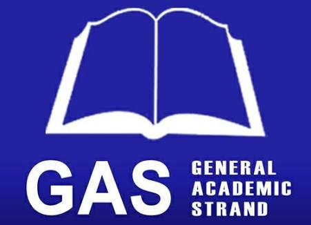

| About the following strands/courses: |
| Academical: |
|  |
| GAS |
| The General Academic Strand (GAS) is the perfect path for students who want flexibility, critical thinking skills, and a well-rounded education that opens doors to a wide range of career opportunities. With GAS, you get to explore various subjects across different fields—business, humanities, social sciences, and more—giving you a broad academic foundation to build on.
This strand is ideal for students who aren’t yet sure which specific career path to take but still want to keep their options open. Whether you’re interested in law, psychology, education, management, or even the arts, GAS equips you with the skills needed to succeed in a variety of fields. You’ll engage in activities that sharpen your analytical abilities, communication skills, and creativity, preparing you for higher education or the workforce.
The beauty of GAS lies in its versatility. It allows you to mix and match subjects that fit your interests and future goals, while also developing the problem-solving, leadership, and research skills that are valuable in any career. With the ever-evolving job market, having a broad skill set and the ability to adapt is crucial, and GAS provides the perfect foundation to help you do just that.
Whether you're aiming for a college degree, looking to dive into entrepreneurship, or planning to explore various professional paths, the General Academic Strand offers endless possibilities to shape your future. |
|
| STEM |
| The Science, Technology, Engineering, and Mathematics (STEM) strand is where curiosity meets innovation, and imagination transforms into reality. It's a dynamic field that challenges minds to explore the fundamental laws of nature, develop cutting-edge technologies, design groundbreaking solutions, and solve the most pressing problems of our time. From discovering new scientific phenomena to creating futuristic technologies, STEM empowers students to think critically, experiment boldly, and build a better world.
STEM is more than just a collection of subjects—it's a mindset that fosters creativity, problem-solving, and collaboration. Whether you're exploring the mysteries of space, building artificial intelligence, designing sustainable cities, or pushing the limits of human knowledge, the STEM strand prepares you for a future where you’ll not only keep up with change, but lead it.
For those passionate about making an impact, STEM opens doors to endless opportunities and offers the tools to shape the future. It’s about pushing boundaries, embracing challenges, and using knowledge to create real-world solutions that affect everything from medicine and energy to transportation and communication. In the STEM world, no idea is too bold, no dream is too big, and no challenge is insurmountable. |
|
| HUMSS |
| The Humanities and Social Sciences (HUMSS) strand is the bridge between understanding the human experience and shaping the world we live in. It’s a journey into the heart of culture, society, and the mind, where students dive deep into the complexities of human behavior, history, philosophy, and the arts. From studying ancient civilizations to exploring modern social issues, HUMSS empowers students to think critically, empathize with diverse perspectives, and engage with the world on a deeper level.
HUMSS is for those who are curious about what drives people, societies, and cultures. It’s about telling stories that inspire change, analyzing systems that shape our lives, and crafting solutions to the world’s most pressing problems. Whether it's writing impactful literature, designing public policies, interpreting art, or advocating for human rights, HUMSS prepares students to be thought leaders, communicators, and advocates for social progress.
In the HUMSS strand, students learn the power of words, ideas, and actions to spark change. It’s where empathy meets intellect, and passion fuels purpose. If you want to understand the world, influence society, and create meaningful connections, the HUMSS strand is your gateway to a future where you can make a lasting impact. |
| TVL: |
 |
| ICT |
| Information and Communication Technology (ICT) is the dynamic fusion of technology, systems, and networks that powers the digital age. At its core, ICT encompasses everything from computers and software to telecommunications and the internet, enabling seamless data exchange and connectivity across the globe. It drives innovation, shaping the way we work, learn, and communicate. Whether it's cloud computing, artificial intelligence, or the Internet of Things (IoT), ICT opens doors to endless possibilities, transforming industries and empowering individuals to connect, create, and collaborate like never before. In a world increasingly defined by digital landscapes, ICT is the backbone of modern progress. |
|
| EIM |
| The Electrical Installation and Maintenance (EIM) strand is your gateway to mastering the world of electrical systems, combining hands-on skills with technical expertise. This track prepares you for a dynamic career in one of the most vital industries—powering homes, businesses, and entire cities.
In EIM, you’ll learn how to install, repair, and maintain electrical systems, from wiring and lighting to complex industrial setups. You'll get practical experience working with the latest tools and technology, all while developing a deep understanding of electrical safety, troubleshooting, and circuit design. Whether you're fixing appliances, installing electrical panels, or working on large-scale construction projects, EIM provides the skills and knowledge needed to excel in a high-demand field.
With the rapid growth of renewable energy, automation, and smart technology, the opportunities for skilled electricians are vast. EIM graduates are in high demand, with a wide range of career options—from residential electricians to industrial maintenance experts or even tech-savvy roles in energy efficiency.
If you're ready to work with your hands, solve problems, and play a key role in the electrifying future of technology, the EIM strand is the spark that will light your way. |